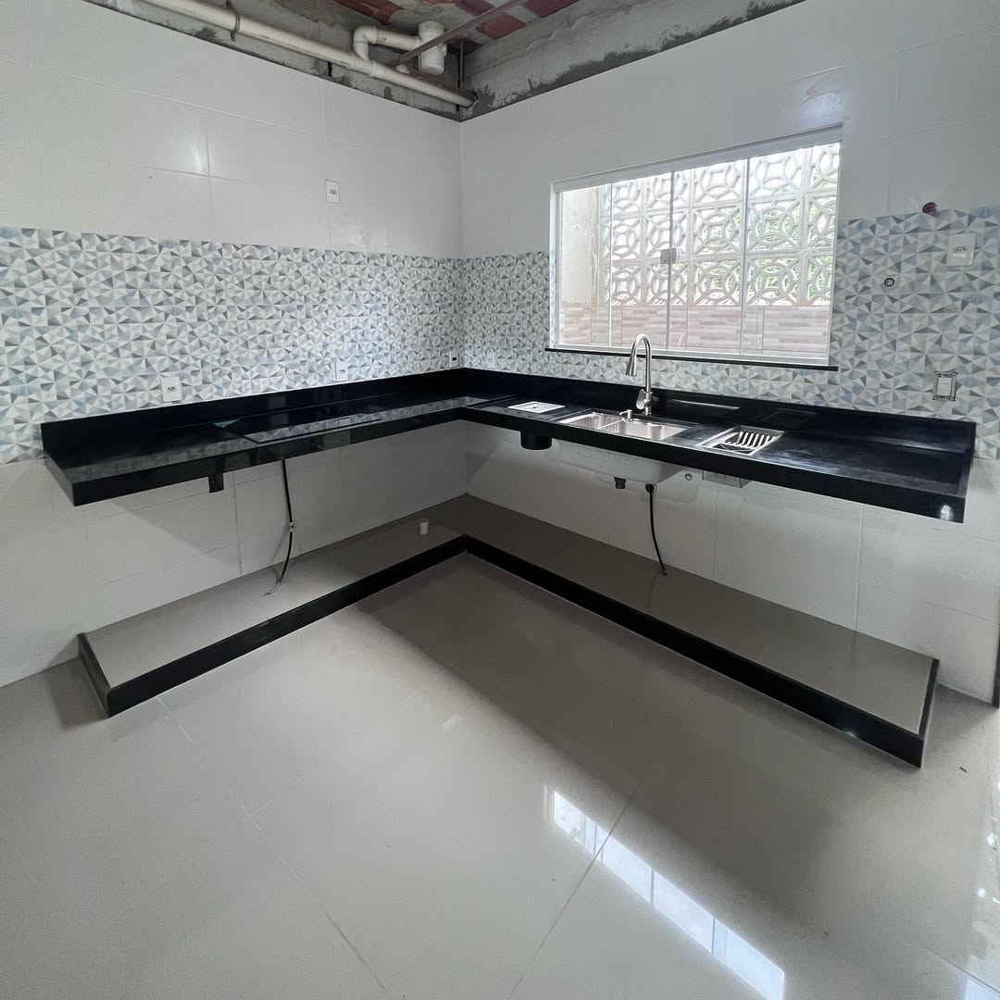

15 Março 2026
Quanto custa uma bancada de mármore na Barra da Tijuca?
Descubra os fatores que influenciam o preço de uma bancada de mármore e como escolher a melhor opção para seu projeto na Barra da Tijuca.
Ler Mais